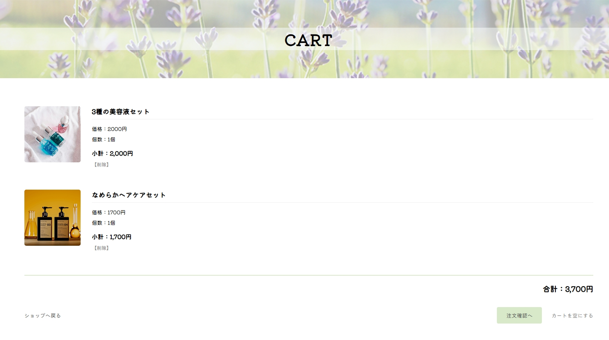
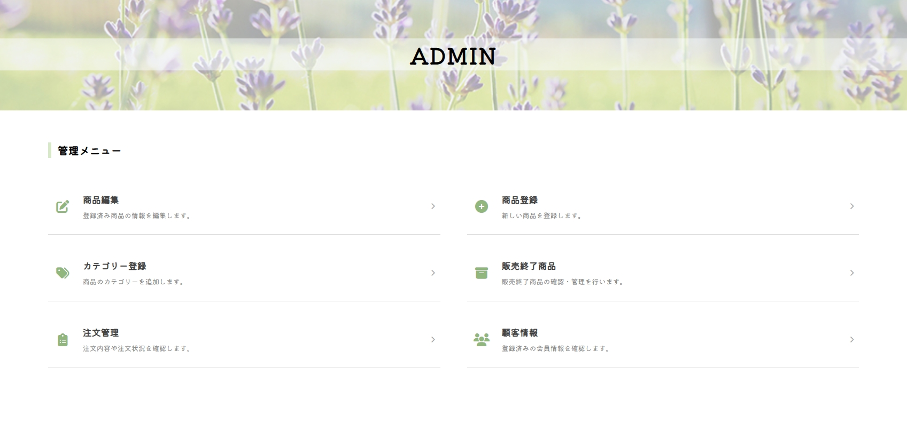

画像①：商品一覧画面
image/daichi-products.jpg
image/daichi-products.jpg
FEATURE 01
商品一覧・検索・並び替え
MySQLに登録した商品情報をPHPで取得し、商品一覧に表示します。カテゴリや商品名による検索に加え、価格の安い順・高い順、新着順での並び替えに対応しました。
- 商品名によるキーワード検索
- カテゴリでの絞り込み
- 価格順・新着順の並び替え
TRAINING PROJECT / 03
PHP・MySQLを用いたECサイト
商品を探す・カートに入れる・購入手続きを進める流れに加え、顧客や商品を扱う管理者画面も制作した、スキンケア用品のECサイトです。
01 / OVERVIEW
PHPとMySQLを活用し、商品を選ぶ利用者側と、商品・顧客を管理する運営側の両方を備えたECサイトを制作しました。
商品一覧・詳細表示、検索やカテゴリによる絞り込み、カート、会員ログインに加え、管理者専用ページでのデータ管理にも取り組みました。画面の演出にはjQueryを利用しています。
02 / FEATURE DETAILS
利用者向け画面と管理者向け画面に分けて、主な機能を紹介します。
FEATURE 01
MySQLに登録した商品情報をPHPで取得し、商品一覧に表示します。カテゴリや商品名による検索に加え、価格の安い順・高い順、新着順での並び替えに対応しました。

FEATURE 02
商品詳細ページでは、商品画像や価格、在庫数を表示。購入数量は在庫数と上限数を考慮して選択でき、在庫がない場合はカート追加ボタンを表示しないようにしています。

FEATURE 03
商品をカートに追加し、注文までの流れを操作できる構成にしました。PHPのセッションを利用し、画面を移動してもカートの内容を保持します。

FEATURE 04
会員のログイン状態を管理し、ログイン状況に応じて表示するメニューを切り替えています。管理者用ページはセッションを確認し、管理者以外のアクセスを制限しています。

FEATURE 05
管理者専用画面から、商品情報や顧客情報を確認できるようにしました。顧客一覧から詳細へ遷移でき、商品検索・カテゴリ絞り込みなど、必要な情報を探しやすくする機能も実装しています。
03 / LIVE DEMO
公開先URLとデモアカウントが準備できたら、こちらから案内します。
商品一覧から検索、商品詳細、カートへの追加までの操作を紹介します。
※ 公開URLを設定してください。
商品や顧客の管理機能は、個人情報を含まないサンプルデータで紹介する想定です。
04 / VIDEO
利用者向けの操作と管理者向けの画面を動画で紹介できます。
動画を配置する場合は、商品検索 → カート → 管理画面の順で操作を収録すると伝わりやすくなります。
05 / DEVELOPMENT
商品検索やカテゴリによる絞り込みでは、PDOのプリペアドステートメントとパラメータのバインドを利用しました。検索条件に応じて必要な商品を取得する処理を組み立てました。
商品詳細では在庫数に応じて選択できる数量を制御し、在庫がない商品はカート追加ボタンを表示しないようにしました。
jQueryと背景画像切り替え用プラグインを読み込み、スライドショーを取り入れました。SCSSでレイアウトを管理し、スマートフォン表示にも対応しています。
セッションに保存したログイン情報を使って権限を確認し、管理者以外は管理画面にアクセスできないようにしました。顧客情報の表示にも管理者向けの条件を設けています。
06 / GENERATIVE AI
制作過程での生成AIの利用について紹介します。
生成AIを、実装方法の調査やエラー原因を整理するための補助として活用しました。提案内容は処理を確認し、実際に動作を試しながら修正しました。
提案された処理がそのまま正しく動くとは限らないため、検索・カート・権限制御など、画面とデータベースの動きを確かめながら開発を進めました。
07 / NEXT STEPS
注文管理や在庫管理の動作をさらに検証し、利用者が迷わず操作できる画面表示と、入力エラー時の案内を改善していきたいと考えています。
また、公開環境で利用者向け画面を試せるよう、個人情報を含まないデモデータの整備と動作確認を進めたいと考えています。